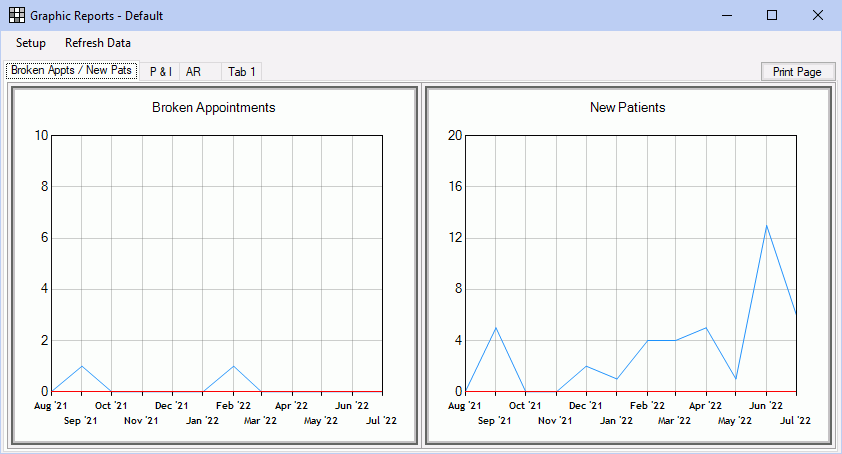

Graphic Reports
Graphic reports are used to quickly compare and analyze trends and data.
In the Main Menu, click Reports, Graphic.
The reports that display are customized by the practice in Graphic Reports Setup. Each report can show results for the entire practice, by provider or clinic, and for a specific date range.
- Graphical Reports: Allows a user to access the graphic reports.
- Production and Income - View all Providers: User can access graphic Production and Income reports for all providers. If a provider does not have this permission, they can still view their own reports, but only when they are logged on.
There are five types of graphic reports:
- Production
- Income
- Accounts Receivable
- New Patients
- Broken Appointments
Options:
- Setup: Click to set up tabs and reports.
- Refresh Data: Click to refresh the data of the reports.
- Print Page: Click to print all reports currently displaying in the tab.
Reports are grouped first by tab, then by cells in columns and rows.
- Hover over a specific point or column in results to display more details.
- If a legend shows on the report, click a legend item to quickly hide/unhide it in the report results.
- General practice data is colored blue. Data grouped by provider is based on the provider color.
- Hover over a report to display three clickable icons:
 Refresh the data in the report.
Refresh the data in the report. Print or export the report data.
Print or export the report data. Temporarily edit report criteria. These changes will immediately affect the report view, but will not be saved.
Temporarily edit report criteria. These changes will immediately affect the report view, but will not be saved.
Print Settings
Graphic reports can be printed or exported.
- To print/export a single graphic report, hover over a report, then click the Print/Export button.
- To print/export all reports currently displaying, click Print Page in the upper right corner.
The Print Settings window will open.

Change print/export settings as desired. The displayed image will reflect any settings.
- Chart Size: The width and height of the image to print/export, in pixels.
- Margins: Any additional margin to add, in pixels. Width adds additional margin to the left margin. Height adds additional margin to the top margin.
- Chart Position: Changes the position of the X and Y axis.
- Landscape: Check to print, save, or export the report in Landscape orientation. Uncheck to print, save, or export in Portrait orientation.
- Export: Save a PDF of the graphic report(s).
- Print: Print the graphic report(s) to the default printer.
- Close: Close the Print Settings window.
Date Range: Reports dynamically adjust beween 6 months and 12 months depending on a few factors:
- Rows and Columns: Increasing or reducing the reports shown in the report grid.
- Maximizing: Clicking the Maximize button in the Graphics Report window will use 12 month format.
- Resolution: Adjusting the resolution can cause the graph to use the 12 month format.